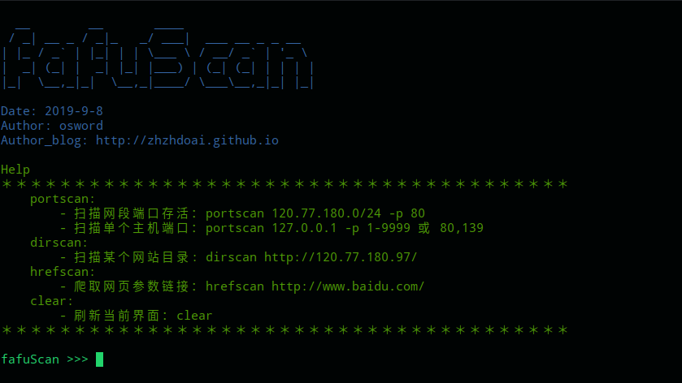
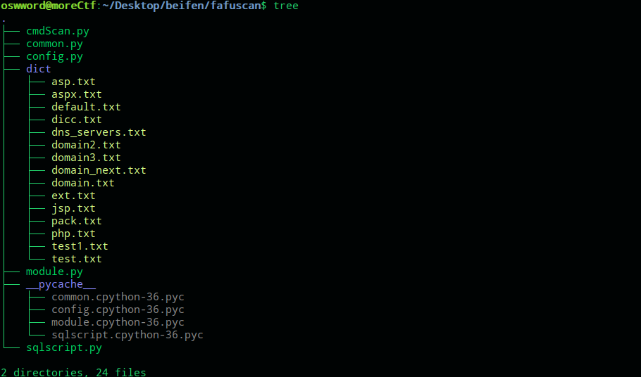
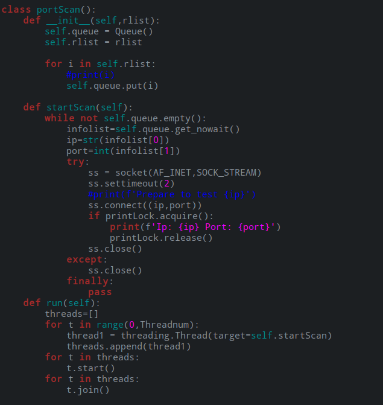
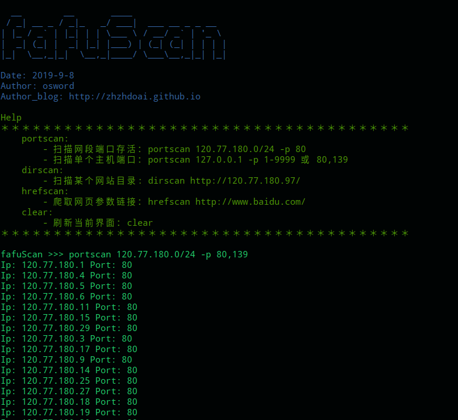
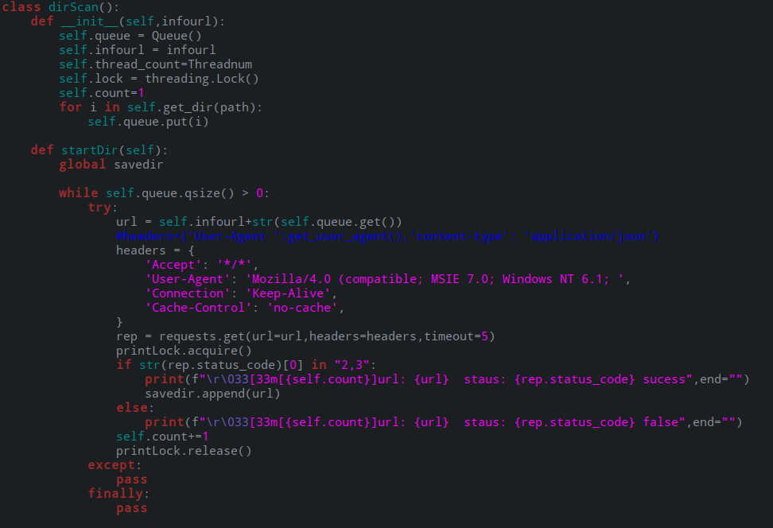
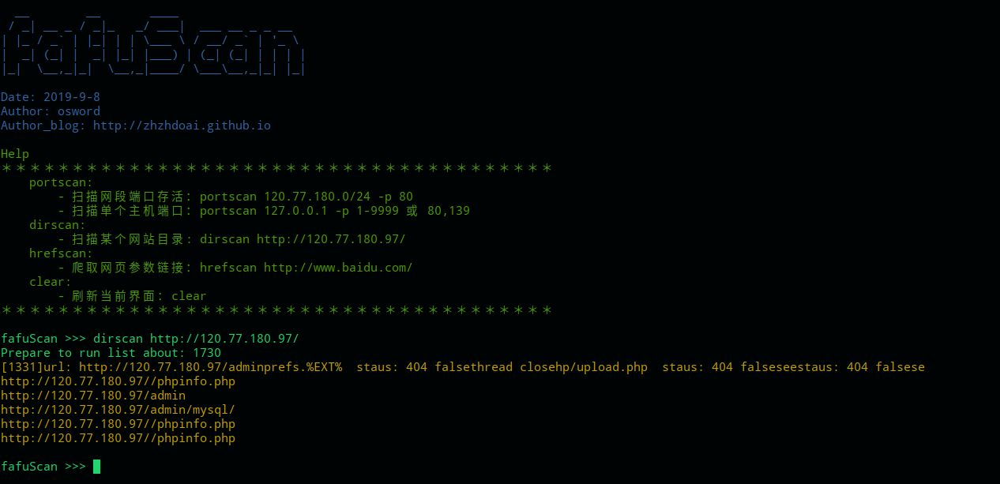
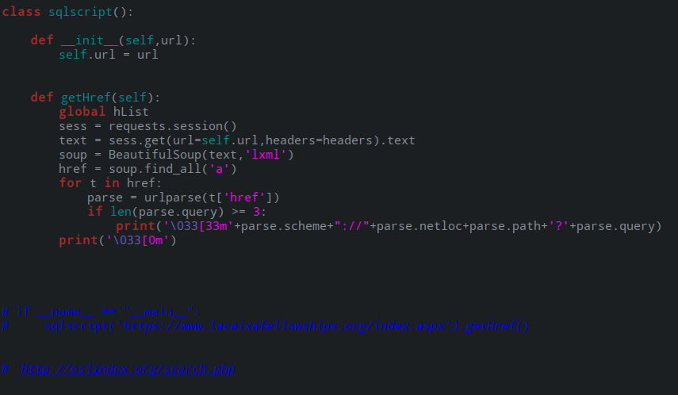
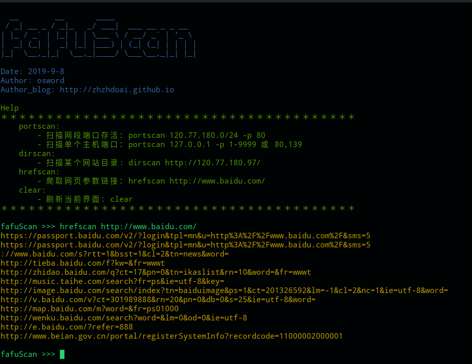

课程设计 | fafuscan

前言
项目地址：https://github.com/zhzhdoai/fafuscan.git
网络课程设计我选择了端口扫描器，算是练习巩固python编程。比不上世面高端扫描器，毕竟是自己的工具，多多少少有点小成就感.
概述
在编写脚本时，前前后后改了三版。第一版本使用单线程进行，但发现在进行网段大规模扫描时候余力不足。第二版本学习了多线程，进行编写，但是前期将各个功能进行冗杂在一个文件中没有很好的扩展性。下方的目录就是第三版的成功，module.py放置功能文件，dict目录放置web扫描字符，cmdScan.py主程序调配方法，common.py通用方法，config.py配置文件。
目录结构

主机存活、端口扫描
关键代码

效果展示

目录扫描
关键代码

效果展示

参数提取
关键代码

效果展示

参考链接
[1] 手把手教你制作信息收集器之端口扫描
https://www.freebuf.com/column/158936.html
[2] python使用socket实现多线程端口扫描
https://blog.csdn.net/comprel/article/details/72825562
[3] Web漏洞扫描器的设计与实现（一）
https://www.freebuf.com/column/192332.html
[4] Python黑客]Python手把手教你打造自己的多线程批量工具
https://bbs.ichunqiu.com/thread-31814-1-1.html?from=beef